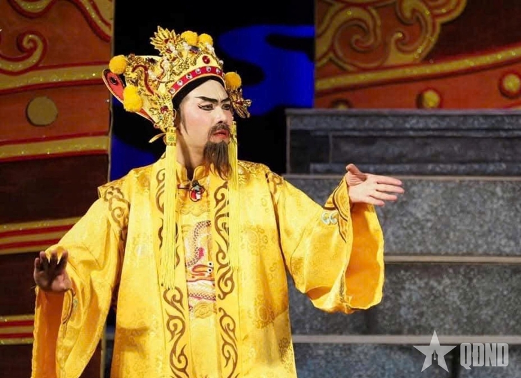
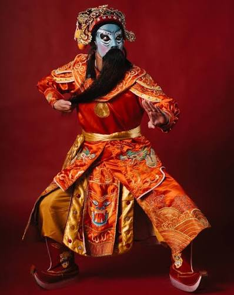
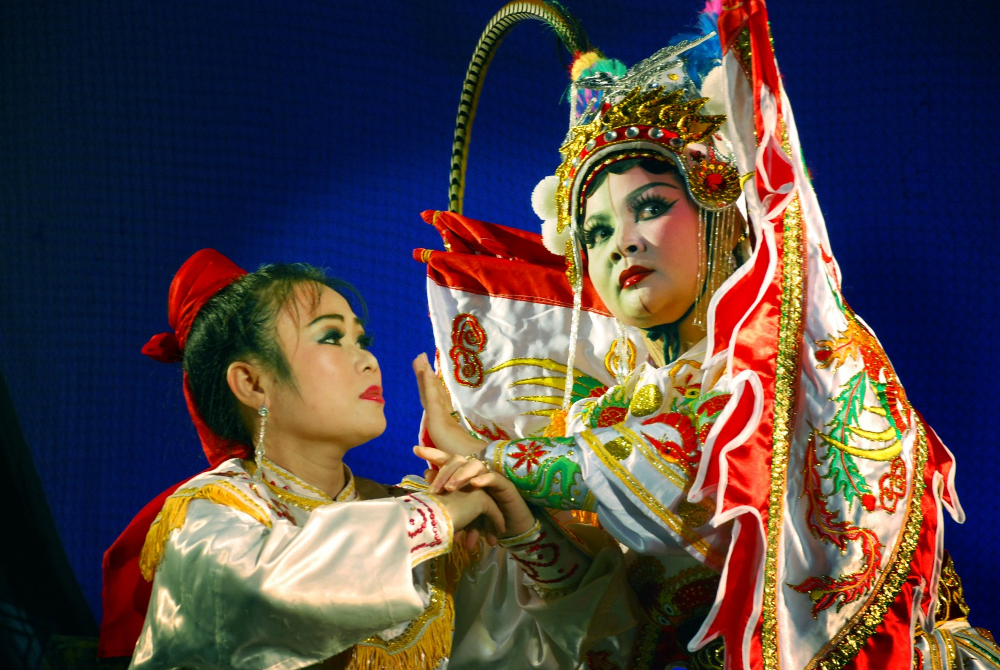
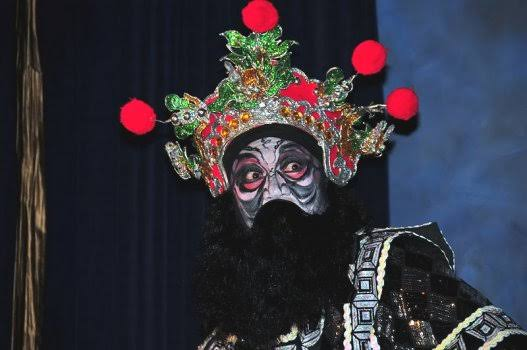
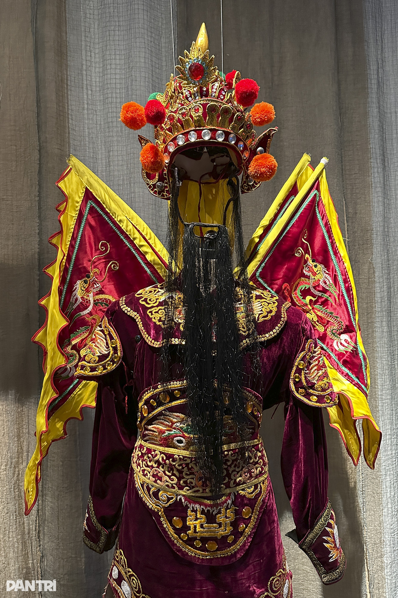

Màu sắc
Vàng
Địa vị
Dành riêng cho vua, hoàng hậu hoặc những nhân vật có địa vị cao nhất tròn triều
Ý nghĩa
Biểu tượng của quyền lực, vương quyền và sự cao quýVàng: tôn nghiêm và uy quyền tuyệt đối

trong Tuồng
Trang phục trong tuồng có thể thể hiện được tính cách, tuổi tác, già/trẻ và địa vị xã hội của các nhân vật trong vở tuồng đó qua màu sắc, chi tiết, kiểu dáng trang phục.
Trang phục trong tuồng có thể thể hiện được tính cách, tuổi tác, già/trẻ và địa vị xã hội của các nhân vật trong vở tuồng đó qua màu sắc, chi tiết, kiểu dáng trang phục.
Màu sắc
Địa vị
Dành riêng cho vua, hoàng hậu hoặc những nhân vật có địa vị cao nhất tròn triều
Ý nghĩa
Biểu tượng của quyền lực, vương quyền và sự cao quýVàng: tôn nghiêm và uy quyền tuyệt đối

Màu sắc
Địa vị
Dành cho Hoàng thân quốc thích và các quan, tướng võ trung thành hoặc ng có tinh thần chinh trực
Ý nghĩa
Tượng trưng cho lòng trung nghĩa, dũng cảm và khí phách anh hùng.Đỏ: mạnh mẽ, trung kiên

Màu sắc
Địa vị
Dành cho các nhân vật văn võ song toàn. Dành cho các nịnh thần
Ý nghĩa
Gắn với sự gian xảo, mưu mô hoặc lạnh lùng. Đôi lúc thể hiện sự tang tóc trên skhau

Màu sắc
Địa vị
Dành cho các tướng và quan nóng tính, có tinh cách bộc trực, trung thành và quả cảm
Ý nghĩa
Biểu hiện cho sự cương trực, mạnh mẽ, thẳng thắn và quyết đoán

Màu sắc
Địa vị
Đặc biệt dùng cho các nhân vật nịnh thần

Màu sắc chủ đạo của hóa trang hát bội là màu đen - trắng - đỏ. Bên cạnh đó còn có 1 số màu phụ như xanh/ xám
Sẽ có 2 loại mặt nạ chính gồm:
Bố cục kinh điển, hóa trang trên đường trung trực, trục nằm ở giữa gương mặt, chia 2 không gian trên khuôn mặt thành 2 phần trái phải đối xứng nhau
Bố cục được dựa vào nguyên tắc tỉ lệ vàng (biểu trưng cho sự cân đối, hài hòa của tự nhiên và tạo hóa). Các chi tiết quan trọng như mắt, lông mày, mũi và miệng được nhấn mạnh tại những vị trí trọng tâm của khuôn mặt để tạo điểm nhấn. Nhờ đó, khán giả dễ tập trung vào biểu cảm và nhanh chóng nhận diện tính cách của nhân vật. Tuy nhiên, đây là cách lý giải về mặt tạo hình, không phải là quy luật toán học áp dụng tuyệt đối cho mọi khuôn mặt hóa trang.
Bố cục lấy chủ đề làm trọng tâm để xây dựng hình tượng nhân vật. Nhìn chung những hoa văn có xu hướng tương phản rất mạnh về màu sắc, về đậm nhạt, về hình, về đường nét, hay có sự tranh chấp về mảng sáng tối.
Nhịp điệu là sự thay đổi, sự chuyển biến, vẫn mang tính lặp lại nhưng không phải nguyên xi. Bố cục này nhằm làm rõ những quy ước về tính cách, hình tượng nhân vật. Có nhiều nhịp điệu được áp dụng cho nhiều kiểu nhân vật; nhịp điệu theo xu hướng đột ngột, mạnh mẽ, dứt khoát cho kẻ mạnh, kẻ ác, người thắng thế,... Nhưng cũng có nhịp điệu với nét cụp, nét vụn dành cho kẻ thấp hèn, yếu thế,...
Màu sắc của tuồng gồm có 5 màu chính, trong đó: đỏ - vàng - lam (3 màu gốc)
trắng - đen (2 màu vô sắc)
Màu sắc trong tuồng có thể có nhiều màu khác theo sắc độ tùy thuộc vào nét tính cách và tuyến nhân vật.
Dựa trên quy luật lượng - chất trong phạm trù triết học. Chất là những màu sắc được vẽ lên khuôn mặt, còn lượng là nét tính cách của nhân vật thể hiện qua đó. Đơn giản, mỗi màu được vẽ ra cần phải có sự tính toán với nhiều yếu tố như: sự nhất quán, ý đồ của bố cục, chỉ cần 1 sự thay đổi nhỏ về màu sắc, sắc độ hay nét vẽ có thể gây ra sự nhầm lẫn về nét tính cách của nhân vật.
Các cặp màu đặt cạnh nhau cần phải có sự ăn ý, tính toán khoa học. Những cặp màu bổ túc và tương phản nhau sẽ tạo nên sức sống mãnh liệt trên sân khấu.
Cặp màu tương phản nhiều năng lượng, có sự căng tự nhiên -> gây chú ý với não. Cặp màu bổ túc là hai màu gần nhau có khả năng hỗ trợ và tôn nhau lên. Một số cặp màu tương phản thường đi với nhau như: đen - trắng, trắng - đỏ, đen - đỏ.
Một số cặp màu bổ túc thường đi với nhau như đỏ - lục, vàng - lam, cánh sen - lục... hoặc các màu điểm xuyết cũng có khả năng hỗ trợ cho các mảng màu chủ đạo.
Âm là sắc tối yên tĩnh, hấp thụ màu, càng nhiều màu tối thì càng nhiều năng lượng âm. Còn dương là sắc sáng chuyển động, càng nhiều màu sáng thì càng nhiều năng lượng.
| Màu sắc | Ý nghĩa |
|---|---|
| Đỏ son, đỏ ngân | Nhân vật thẳng thắn trí dũng, nghĩa khí, trung liệt, vai anh hùng. Vai chính diện |
| Đỏ bầm | Nhân vật có sức mạnh nhưng có các thí hư tật xấu (rượu chè, hoang dâm,...). Vai phản diện |
| Trắng | Nhân vật có diện mạo đẹp, thư sinh, nhu mì, trong sáng |
| Đen | Người chất phác, bộc trực, nóng nảy nhưng ngay thẳng và chính trực |
| Xanh da trời | Chưa biết tốt hay xấu tuy nhiên rất mưu mô, xảo quyệt và ngông nghênh |
| Xám dợt | Người tuổi tác, kẻ bần dân |
| Lục | Không chung thủy, trước sau không như nhau, người mưu mô xảo quyệt |
| Xanh chàm | Tướng núi, người miền biển |
| Vàng/Bạc | Nhà tu hành, thần tiên |
| Trắng mốc/ xám/ hồng lợt/ vỏ cua | Nịnh thần, gian thần |
| Mặt thật, má hồng | Trung thần |
| Mặt vằn vện đen trắng | Nhân vật bộc trực, nóng nảy |
| Mặt vằn vện có xen màu đỏ | Yêu ma quỷ quái |
| Màu sắc/ Kiểu dáng | Ý nghĩa |
|---|---|
| Lông mày trắng | Thần tiên, người cao tuổi |
| Lông mày mềm mại, đơn giản | Người hiền hậu |
| Lông mày uốn lượn, bay múa | Người đắc ý, kiêu ngạo |
| Lông mày thẳng dốc/ có viền đỏ | Người nóng tính |
| Lông mày cau có | Người hay trầm tư, sầu muộn |
| Lông mày ngắn | Kẻ gian xảo, xu nịnh |
| Màu sắc/ Kiểu dáng | Ý nghĩa |
|---|---|
| Râu xanh/đen dài | Quan văn |
| Râu trắng/bạc dài | Vai lão võ |
| Râu bắp màu hung đỏ | Vai yêu ma |
| Râu đỏ | Tướng phiên (tức tướng ngoại bang) |
| Râu đen ngắn | Kép núi |
| Râu bạc ngắn | Quan văn trung |
| Râu 3 hoặc 5 chòm, xuông dài | Vai dồn hậu, trầm tĩnh, quý phái |
| Râu đen xoắn | Vai nóng tính, dữ dằn |
| Râu ngắn 3 chòm hoặc 5 chòm | Vai dân thường, nông dân, dân chài, tiều phu |
| Râu chuột | Vai bộp chộp, lanh chanh |
| Râu dê hoặc râu vẽ lên mặt | Vai đểu giả, công tử bột hoặc các vai diễn hề |
| Màu sắc | Ý nghĩa |
|---|---|
| Trắng | Xuất thân từ thành thị, các vai công thư, quan văn |
| Đỏ | Xuất thân từ vùng biển |
| Đen/ Da xanh/ Xám/Da đen | Xuất thân từ vùng núi rừng |
| Xanh cây/ Xanh thẫm | Các vai yêu đạo |
Màu da trên nhân vật cũng có lúc thay đổi theo tuổi tác và hòan cảnh sống của nhân vật
Quy tắc “cha truyền con nối”: nếu người cha mang mặt màu gì thì người con phải theo màu da đó
Phần lớn sử dụng các nét cong tạo cảm giác mềm mại, linh hoạt. Các nét vẽ thường mô phỏng từ hình tượng dân gian (long, lân, quy, phụng) tương ứng với địa vị cao quý (vua, quan), hoặc dựa trên tướng số và đặc trưng loài vật của nhân vật
Luật Âm - Dương, Ngũ hành: Màu sắc trên mặt nạ phải đậm, đường nét phải rõ ràng. Sự phối hợp các cặp màu (đen - trắng, đen - đỏ, trắng - đỏ) thể hiện tính Âm - Dương. Đồng thời, hình dáng các nét vẽ, hướng vẽ bắt buộc phải tuân theo quy luật Ngũ hành (Kim, Mộc, Thủy, Hỏa, Thổ) để biểu đạt chiều hướng tính cách.
| Hành (Mạng) | Đặc điểm hình dáng của nét vẽ |
|---|---|
| Kim | Nét tròn, khuyên, oval, elip, đường kẻ thẳng,... |
| Mộc | Mác,... |
| Thủy | Lượn sóng,... |
| Hỏa | Uốn hình lửa hoặc tam giác,... |
| Thổ | Chấm, hình vuông có bo góc, hình chữ nhật có bo góc,... |
Cách vẽ tròng mắt rất đa dạng, chia thành các loại chính: tròng xéo, tròng trứng, tròng táo, tròng lõa, và tròng mỏ. Trong đó, tròng xéo (phổ biến ở các vai tướng, kép võ trẻ chính diện) được miêu tả chi tiết nhất với tạo hình như cánh chim bay và được phân loại kỹ lưỡng dựa trên độ tuổi (qua tên gọi non, già, lỡ) và tính cách/số phận (qua màu sắc đen, đỏ, xám, mỏ két). Các loại tròng khác như tròng trứng, tròng táo, tròng mỏ đại diện cho các hạng võ tướng khác nhau, riêng tròng lõa (đeo cặp mắt đồng) chuyên dành cho các vai lão tướng già hoặc thọ lão gia, lão bình dân.
| Loại tròng + đặc điểm | Ý nghĩa |
|---|---|
| Tròng xéo (Có một cái vòng xéo trên con mắt. Vùng mắt vẽ hình con chim bay: đầu chim ở khóe mắt, cánh chim lấp cả chân mày xếch lên thái dương, cánh kia dưới mắt xếch lên trên tai. | Viên tướng, kép võ còn trẻ (con nhà tướng). |
| Tròng xéo non | Nhân vật từ 15 tuổi trở xuống. |
| Tròng xéo (thường) | Nhân vật tuổi thanh niên |
| Tròng xéo già | Nhân vật tuổi từ 30 trở lên. |
| Tròng xéo lỡ | Nhân vật từ 40 - 50 tuổi |
| Tròng xéo đen | Tính tình cộc cằn, nóng nảy nhưng ngay thẳng, tốt bụng |
| Tròng xéo đỏ | Trí tướng, mưu lược |
| Tròng xéo xám (kéo xanh) | Tính tình nóng nảy, thẳng thắn, bộc trực |
| Tròng xéo mỏ két (tròng xéo mỏ) | Nhân vật phải chết nơi chiến trường |
| Tròng trứng | Võ tướng |
| Tròng táo | Tướng đứng tuổi |
| Tròng lõa | Từ 60 - 70 tuổi. |
| Tròng lõa trên 70 tuổi | Trên 70 tuổi. |
| Tròng lõa xám và đen | Tính tình nóng nảy nhưng thẳng thắn, thật thà |
| Tròng lõa đỏ | Chia theo tầng lớp: thọ lão ông (quyền quý, cao sang) hoặc lão bình dân (tiều phu, lão chài, lão nông). |
| Tròng mỏ | Tướng trung thành, bậc trung |
Nét vẽ theo đặc trung loài vật: Đối với các nhân vật nguyên là động vật tu luyện thành người, người diễn sẽ chọn lọc những nét đặc trưng nhất của loài vật đó (khỉ, rùa, chim, rồng, cá...) rồi vẽ cường điệu hóa lên khuôn mặt.
| Hình tượng / Loài vật | Đặc điểm ứng dụng trong nét vẽ hóa trang |
|---|---|
| Tứ linh (Long, Lân, Quy, Phụng) | Tượng trưng cho vua, quan; biểu thị sự vĩnh cửu và vẻ đẹp sang quý. |
| Rồng (Long) / Cá hóa rồng | Nét vẽ mang dáng dấp của rồng, hoặc vừa có sừng vừa có vây cá. |
| Khỉ | Chọn lọc và cường điệu hóa các nét đặc trưng của mặt khỉ. |
| Rùa | Chọn lọc và cường điệu hóa các nét đặc trưng của mặt rùa. |
| Chim | Chọn lọc và cường điệu hóa các nét đặc trưng của mặt chim. |